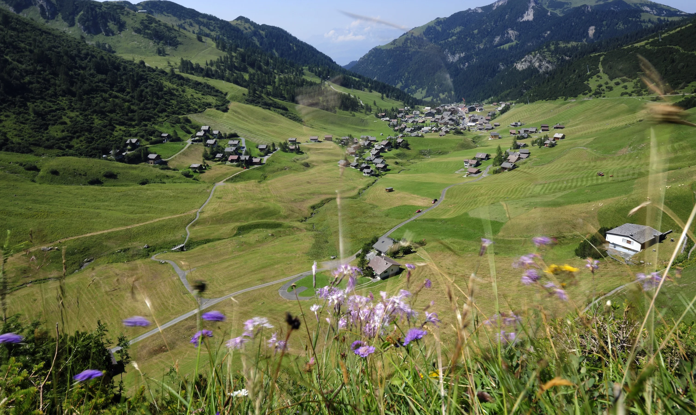

GO NATURAL
A walk in nauture walks the soul back home

"Every country is beautiful in its own way."
Ecotourism team
Every country is adorned with its own unique tapestry of natural beauty, cultural richness, and historical marvels waiting to be explored. From the lush rainforests of Costa Rica to the snow-capped peaks of the Swiss Alps, each nation offers a myriad of breathtaking landscapes to enchant and inspire travelers. Ecotourism has emerged as a powerful force in many countries, encouraging visitors to appreciate and preserve the delicate balance of nature. Whether it's the pristine beaches of the Seychelles or the majestic fjords of Norway, ecotourism destinations provide an opportunity for travelers to connect with the environment in a sustainable and responsible manner. Cultural diversity adds another layer of allure to countries worldwide. From the ancient temples of Angkor Wat in Cambodia to the vibrant markets of Marrakech in Morocco, every corner of the globe is infused with its own distinct heritage and traditions, inviting travelers to immerse themselves in the richness of different cultures.
In addition to natural wonders and cultural treasures, the warmth and hospitality of local communities further enhance the beauty of countries around the world. Whether it's savoring homemade cuisine with a local family in Italy or participating in a traditional dance ceremony in Bali, the kindness and generosity of people worldwide leave an indelible mark on travelers' hearts.
Some beauties of Liechtenstein
Gutenberg Castle
Perched on a hilltop overlooking the capital city of Vaduz, Gutenberg Castle offers stunning panoramic views of the surrounding Rhine Valley and the Swiss Alps. Dating back to the Middle Ages, the castle is steeped in history and surrounded by picturesque vineyards and forests.
Malbun
Malbun is Liechtenstein's only ski resort and a charming alpine village nestled in the mountains. In the winter, it transforms into a winter wonderland with pristine snow-covered slopes, perfect for skiing, snowboarding, and other winter sports. During the summer

Rheinpark Stadion
Rheinpark Stadion is a beautiful riverside park located along the banks of the Rhine River, offering scenic walking and cycling paths, lush greenery, and playgrounds for children. Visitors can enjoy leisurely strolls along the riverfront, relax on benches overlooking the water, and take in views of the surrounding mountains and countryside.

Vaduz Castle
Vaduz Castle is the official residence of the Prince of Liechtenstein and a symbol of the country's rich history and heritage. Perched on a hilltop above Vaduz, the castle is surrounded by vineyards and offers stunning views of the capital and the Rhine Valley below.
Gaflei
Gaflei is a picturesque mountain village located in the foothills of the Alps, offering breathtaking views of the surrounding mountains and valleys. Visitors can explore scenic hiking trails that wind through forests and meadows, enjoy picnics with panoramic views, and immerse themselves in the tranquility of the alpine landscape.

Balzers
Balzers is one of the oldest settlements in Liechtenstein and is known for its charming historic architecture and picturesque countryside. Visitors can stroll through the village's quaint streets, admire traditional timber-framed houses, and visit landmarks such as the medieval Church of Saint Nicholas
Eschnerberg Trail
The Eschnerberg Trail is a scenic hiking route that traverses the hills and forests of the Eschnerberg mountain range, offering panoramic views of the Rhine Valley and the Swiss Alps. The trail passes through charming villages, ancient ruins, and lush green landscapes, providing opportunities for outdoor recreation and exploration.

Ruggeller Riet
Ruggeller Riet is a protected wetland area located in the Rhine Valley, home to diverse flora and fauna, including rare bird species and aquatic plants. Visitors can explore wooden boardwalks and observation towers, spot wildlife in their natural habitat, and learn about the importance of wetland conservation in Liechtenstein.